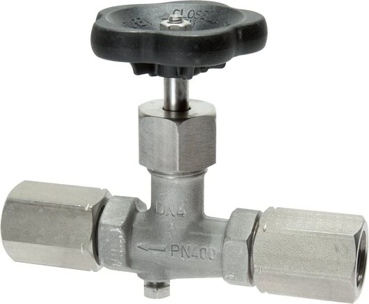

Van chặn đồng hồ áp suất (gauge valve / Absperrventil) theo DIN 16270 / DIN 16271 là phụ kiện quan trọng giúp cô lập đồng hồ khỏi đường process để thay/kiểm định mà không dừng hệ thống. Bài viết giải thích công dụng, cách chọn và lắp. Fast Group Engineering là đại lý cung cấp hàng chính hãng WIKA (Germany) tại Việt Nam.

Gợi ý chọn nhanh
- Cần bảo vệ đồng hồ trước hơi nóng, rung, xung áp hoặc ăn mòn.
- Cần lắp van cô lập để tháo/kiểm định gauge.
- Cần xử lý lệch chuẩn ren hoặc gioăng làm kín.
- Ren vào/ra, vật liệu và áp suất làm việc.
- Môi chất, nhiệt độ, tiêu chuẩn DIN/EN cần dùng.
- Loại phụ kiện: valve, siphon, snubber, gasket, adapter.
- Danh mục phụ kiện đồng hồ áp suất WIKA.
- Bài van chặn, siphon, snubber.
- Bài gioăng và đầu nối chuyển ren.
Tóm tắt nhanh
- Van chặn giúp cô lập đồng hồ để thay thế/kiểm định an toàn.
- Có chức năng xả áp (vent) trước khi tháo đồng hồ.
- Theo chuẩn DIN 16270 / DIN 16271, áp làm việc tới 250–400 bar tùy model.
- Là một phần của cụm lắp gauge: van chặn + siphon + snubber + gioăng.

Van chặn đồng hồ dùng để làm gì?
Trong vận hành, cần tháo đồng hồ để kiểm định (calibration) hoặc thay thế. Nếu không có van chặn, phải dừng và xả áp cả đoạn process — tốn thời gian và rủi ro. Van chặn cho phép:
- Đóng cô lập đồng hồ khỏi áp suất đường ống.
- Xả áp phần còn lại qua cổng vent.
- Tháo đồng hồ an toàn, không ảnh hưởng vận hành.
DIN 16270 vs DIN 16271
| Chuẩn | Đặc điểm |
|---|---|
| DIN 16270 | Van chặn có cổng kiểm tra/vent |
| DIN 16271 | Van chặn có thêm bích/kết nối test gauge |
Cả hai đảm bảo kích thước và ren tiêu chuẩn để tương thích đồng hồ WIKA.
Vì sao van chặn tiết kiệm thời gian & tăng an toàn?
Đồng hồ áp suất là thiết bị cần kiểm định định kỳ và dễ hỏng hơn đường ống, nên việc tháo ra vào là thường xuyên. Nếu không có van chặn, mỗi lần tháo phải cô lập và xả áp cả đoạn process — có khi phải dừng cả dây chuyền, xả môi chất, rồi khởi động lại. Với van chặn, thao tác gói gọn ở chỗ đồng hồ: đóng van, xả áp phần đầu qua cổng vent, tháo đồng hồ an toàn, lắp lại và mở van. Điều này đặc biệt quan trọng với môi chất áp cao, nóng, độc hoặc dễ cháy — nơi việc xả áp cả đoạn ống là rủi ro thật sự. Van chặn biến một công việc bảo trì phức tạp thành thao tác vài phút.
Cổng test — kiểm định tại chỗ không tháo đồng hồ
Nhiều van chặn (đặc biệt DIN 16271) có thêm cổng kết nối đồng hồ chuẩn (test connection). Nhờ đó, kỹ thuật viên có thể đấu một đồng hồ chuẩn vào cổng test và so sánh, hiệu chuẩn ngay tại hiện trường mà không cần tháo đồng hồ đang lắp. Đây là tính năng rất giá trị cho các nhà máy có yêu cầu kiểm định định kỳ nghiêm ngặt, giúp giảm thời gian dừng và tăng độ tin cậy của phép đo giữa các kỳ hiệu chuẩn chính thức.
Van chặn trong cụm đo hoàn chỉnh
Van chặn hiếm khi đứng một mình; nó là "cổng vào" của cả cụm đo. Một cụm điển hình cho môi chất khắc nghiệt gồm: van chặn (cô lập/kiểm định) → siphon (hạ nhiệt nếu có hơi) → snubber (giảm xung nếu có bơm) → đồng hồ (đổ glycerin nếu rung), tất cả nối bằng gioăng đúng chuẩn. Thiết kế cụm đầy đủ ngay từ đầu giúp đồng hồ bền, đọc ổn định và bảo trì an toàn — chi phí phụ kiện nhỏ so với chi phí dừng máy hay thay đồng hồ liên tục.
Cách chọn van chặn (Checklist)
- [ ] Áp làm việc tối đa: đến 250 bar hoặc 400 bar.
- [ ] Ren kết nối: khớp process và đồng hồ (G½...).
- [ ] Vật liệu: thép, inox theo môi chất.
- [ ] Chuẩn: DIN 16270 hay 16271 theo yêu cầu vent/test.
- [ ] Kèm phụ kiện: siphon (hơi nóng), snubber (xung áp).
Lắp đặt cụm đồng hồ chuẩn
Thứ tự từ process đến đồng hồ:
Process → Van chặn (gauge valve) → [Siphon nếu hơi nóng] → [Snubber nếu xung áp] → Đồng hồ áp suất
- Dùng gioăng đúng chuẩn EN 837-1 / DIN 16258 để kín khít.
- Với hơi nóng: thêm ống siphon hạ nhiệt bảo vệ Bourdon tube.
- Với bơm/máy nén: thêm snubber giảm xung áp.
FAQ
Van chặn có bắt buộc không? Không bắt buộc nhưng rất nên có ở vị trí cần kiểm định/thay đồng hồ định kỳ.
Van chặn WIKA chịu được bao nhiêu bar? Tùy model, phổ biến đến 250 hoặc 400 bar.
Có cần cả siphon và snubber không? Chỉ khi có hơi nóng (siphon) hoặc xung áp/rung (snubber).
Sai lầm thường gặp
- Bỏ van chặn ở điểm đo cần kiểm định định kỳ: mỗi lần tháo đồng hồ phải dừng và xả áp cả đoạn ống.
- Chọn áp định mức van thấp hơn áp process: nguy hiểm; van phải chịu được áp làm việc tối đa.
- Sai vật liệu với môi chất ăn mòn: van thép gỉ và kẹt; chọn inox khi cần.
- Quên cổng test khi cần hiệu chuẩn tại chỗ: chọn nhầm DIN 16270 trong khi cần 16271 có test connection.
- Không đồng bộ ren với đồng hồ & process: phải thêm adapter, làm cụm dài và nhiều điểm rò.
Ví dụ chọn nhanh
Đo áp trên đường ống nước công nghiệp áp 0…16 bar, cần kiểm định định kỳ: chọn van chặn DIN 16271 có cổng test, ren G½ đồng bộ với đồng hồ và process, vật liệu thép hoặc inox tùy môi chất. Đo áp hơi: dùng van chặn + siphon chữ U. Đo sau bơm piston: thêm snubber. Đo môi chất áp rất cao: chọn van định mức 400 bar, vật liệu và ren phù hợp. Cùng nguyên tắc, chỉ điều chỉnh áp định mức, vật liệu và phụ kiện đi kèm theo điều kiện thực tế.
Absperrventil nghĩa là gì?
Đây là tên tiếng Đức của van chặn ("van đóng ngắt"). Trên tài liệu WIKA gốc thường ghi Absperrventil kèm chuẩn DIN 16270/16271, tương đương gauge valve trong tiếng Anh. Khi tra mã hoặc đọc datasheet gốc, biết thuật ngữ này giúp bạn xác định đúng phụ kiện cần đặt.
Van chặn khác van giảm áp thế nào?
Van chặn chỉ để đóng/mở cô lập đồng hồ, không thay đổi áp khi mở. Van giảm áp (regulator) mới là thiết bị hạ áp làm việc — đừng nhầm hai loại.
Có loại van chặn tích hợp cho cụm gọn không?
Có; một số phụ kiện gộp van chặn với đầu nối hoặc block nhiều cổng để cụm đo gọn hơn, ít mối nối hơn. Nêu nhu cầu khi hỏi giá để được tư vấn.
Cần báo giá van chặn & phụ kiện đồng hồ WIKA?
Gửi áp làm việc, ren kết nối, chuẩn DIN và số lượng để nhận báo giá.
- Email: minhduc@fastgroup.vn · Zalo: (+84) 938 888 958
Fast Group Engineering – đại lý cung cấp hàng chính hãng WIKA (Germany) tại Việt Nam.
Bài liên quan: [Ống siphon bảo vệ đồng hồ] · [Snubber giảm xung áp] · [Gioăng đồng hồ EN 837-1/DIN 16258] · [Đầu nối chuyển ren]